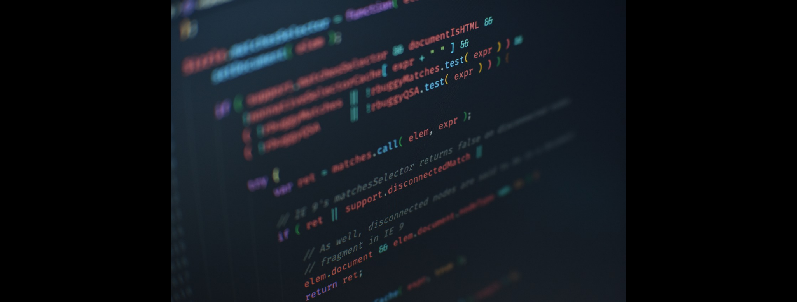
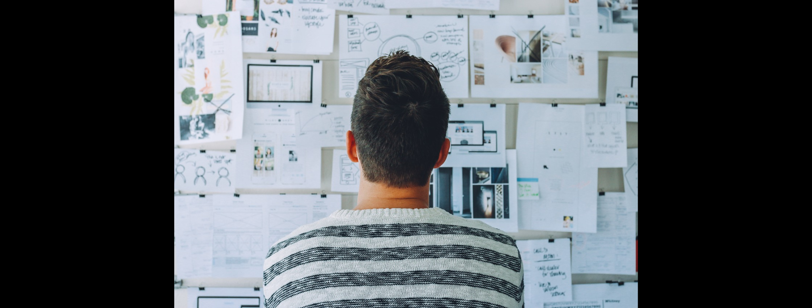
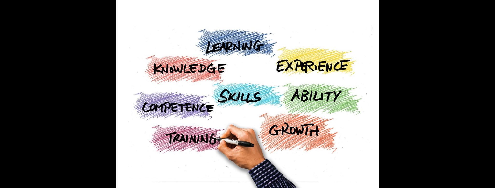

Como é estudar na Trybe?
Torne-se um desenvolvedor de software júnior em 12 meses e só comece a pagar quando estiver ganhado mais do que R$ 3.500 por mês. Essa é a proposta da Trybe, escola de programação e startup de ensino que vem ganhando cada vez mais espaço e visibilidade no Brasil. Felizmente, eu fui um dos escolhidos no processo seletivo para estudar nessa instituição. Nesse artigo vou contar um pouco como cheguei aqui e como está sendo a minha experiência. Mas antes disso, vou contar um pouco do meu histórico acadêmico e profissional.
Muitos jovens hoje se sentem confusos ao decidir que caminho seguir após terminarem o ensino médio. Mas esse não foi o meu caso. Quando terminei o ensino médio eu sabia exatamente o que ia fazer: estudar para me formar como um Técnico em Automação Industrial. E foi o que aconteceu. Dediquei muito tempo e esforço para isso e finalmente recebi meu primeiro diploma. Felizmente, durante essa jornada conheci muitas pessoas que estavam determinadas a não somente ensinar o que estava no currículo do curso, mas também em incentivar os alunos a irem além, a aprenderem coisas novas e a inovarem. Foi assim que um dos professores que até hoje tenho muito carinho e respeito me incentivou a aprender a programar e tornar meus projetos de automação muito mais inovadores. Nas primeiras linhas escritas em C++ nasceu a paixão por programação que me trouxe até aqui.
Terminei minha formação e um tempo depois comecei a trabalhar na indústria. Automação era algo que eu também gostava, mas o que eu realmente queria fazer era trabalhar com desenvolvimento. Então decidi entrar na faculdade. Comecei a cursar Análise e Desenvolvimento de Sistemas. Um semestre se passou, e embora gostasse da teoria que estava aprendendo até então, pouco ou quase nada realizei. Desanimado por não aprender nada prático e por problemas financeiros, tranquei a faculdade. Mas o desejo de programar não havia morrido. Depois de um ano, voltei pro curso, mas agora em outra instituição. Dessa vez tive um pouco mais de prática, mas depois de outro semestre percebi que não ia aprender a programar mesmo, se não fosse buscar o conhecimento por mim mesmo. Comecei então a fazer vários cursos extracurriculares e aprendi em pouco tempo o que a faculdade talvez não me ensinaria até o final da minha formação. Fiz mais de 30 cursos sobre desenvolvimento Front-End, e outras tecnologias. Mesmo assim não me sentia seguro para atuar como um desenvolvedor júnior ainda.
Foi então que conheci a Trybe. No início a ideia de me tornar um desenvolvedor completo, pronto pra entrar no mercado de trabalho em apenas um ano parecia totalmente irrealista. E o pior que o modelo de negócio parecia pra mim um tanto suspeito. Como assim? Pagar só depois que conseguir um emprego com uma remuneração acima de R$3.500 reais? Não pode ser verdade! Fui atrás e descobri que se tratava de uma empresa séria, que trazia um modelo de negócio muito diferente do que estamos acostumados no nosso país. Decidi então fazer o processo seletivo. Na primeira vez que fiz, não levei a sério. Achei que seria mais um daqueles processos seletivos que existem só pra fazer o aluno sentir que conquistou algo e não dispensar a escola logo no início do curso. Pra minha surpresa, foi um processo seletivo bem difícil. Não passei, mas comecei a enxergar a Trybe com outros olhos. Vi que se tratava de algo mais sério do que eu pensava. Então da segunda vez que participei levei a sério, dei o meu melhor, e depois de um difícil e extenso processo seletivo recebi a notícia de que tinha sido aprovado.
O início
Entrar para a Trybe não foi uma decisão fácil. Afinal, tratava-se de um curso caro, durante um ano em que teria de me dedicar quase que exclusivamente aos estudos. Isso exigia planejamento financeiro, até porque durante esse período não poderia trabalhar integralmente, organização e extrema dedicação. Mas logo na primeira semana de aula deu pra ver de que valeria muito a pena. Desde o início a Trybe mostrou ser uma empresa comprometida com o sucesso dos seus alunos. No início, eu achava que esse comprometimento se daria apenas pelo fato de que se eu como aluno da Trybe, não tivesse sucesso na minha carreira, a Trybe não receberia nada de mim. Mas com o decorrer dos dias ficou claro que o compromisso ia muito além disso. Uma escola de grandes valores, valores esses que são deixados bem claros aos alunos logo nos primeiros dias, mostrando que para estar ali é mais importante o respeito, a colaboração e a humildade do que conhecimento técnico.
O dia a dia
O dia a dia na Trybe é muito simples. Normalmente o dia começa com uma dinâmica de grupo que ajudam os alunos a adquirir e aperfeiçoar soft skills que todo bom profissional deve ter como inteligência emocional, comunicação, pensamento crítico, colaboração, criatividade e liderança. Em alguns dias esse momento inicial também é usado para palestras de profissionais de diferentes empresas sobre algum assunto relacionado à carreira e à soft skills também. Depois disso, nós vamos para o dia, ou seja, nossa rotina de estudos, que se divide em conteúdo escrito, vídeos, aula ao vivo e muitos exercícios.
Os conteúdos técnicos, ou seja, as hard skills são divididos em quatro módulos: (1) Introudução ao Desenvolvimento Web, (2) Front-End, (3) Back-End e (4) Ciência da Computação. Cada módulo é dividido em blocos, e no final de cada bloco, um projeto é realizado pelos alunos para validar o conhecimento adquirido até então. Cada projeto tem seus requisitos, e o aluno precisa completar pelo menos 80% dos requisitos obrigatórios para poder seguir em frente. Para saber mais sobre o currículo da Trybe clique aqui.
A metodologia
A metodologia de ensino aplicada no dia a dia da Trybe (metodologia ativa) é muito diferente do que nós estamos acostumados (metodologia passiva). Durante toda a nossa vida, fomos levados a crer que a melhor maneira de aprender é assistir um professor falar por algumas horas, fazer os exercícios propostos pelo professor e decorar um livro inteiro um dia antes da prova. Na nossa cabeça, se fizéssemos tudo isso e fôssemos aprovados, não precisaríamos saber mais nada sobre o assunto - nosso conhecimento estava validado e tínhamos a sensação de que aprendemos muito. No entanto, não podemos negar que depois de pouco tempo, aquilo que tínhamos aprendido já não estava mais lá, perdeu importância e foi descartado pela nossa mente.
A metodologia ativa por outro lado não limita o quanto podemos aprender, nem define um tempo exato pra isso. Como assim? Em outras palavras, boa parte do conhecimento que você vai adquirir é o que você vai buscar com suas próprias pernas. Em alguns momentos, você vai até ter a sensação de que não está aprendendo tanto quanto num modelo de ensino tradicional. Mas na verdade você vai aprender muito mais, descobrir muito mais, e praticar muito mais.
Resumindo
Resumindo, a Trybe me surpreendeu de muitas formas, de um jeito bom. Posso dizer que em menos de dois meses aprendi muito mais do que havia aprendido em todo o tempo de faculdade e das dezenas de cursos que fiz. E mais do que isso, já consigo ver o resultado do meu aprendizado. Não tem sido nada fácil. É uma rotina de estudos apertada e desafiadora. Mas são os desafios que fazem a pessoa que somos hoje melhor do que a pessoa que éramos ontem.